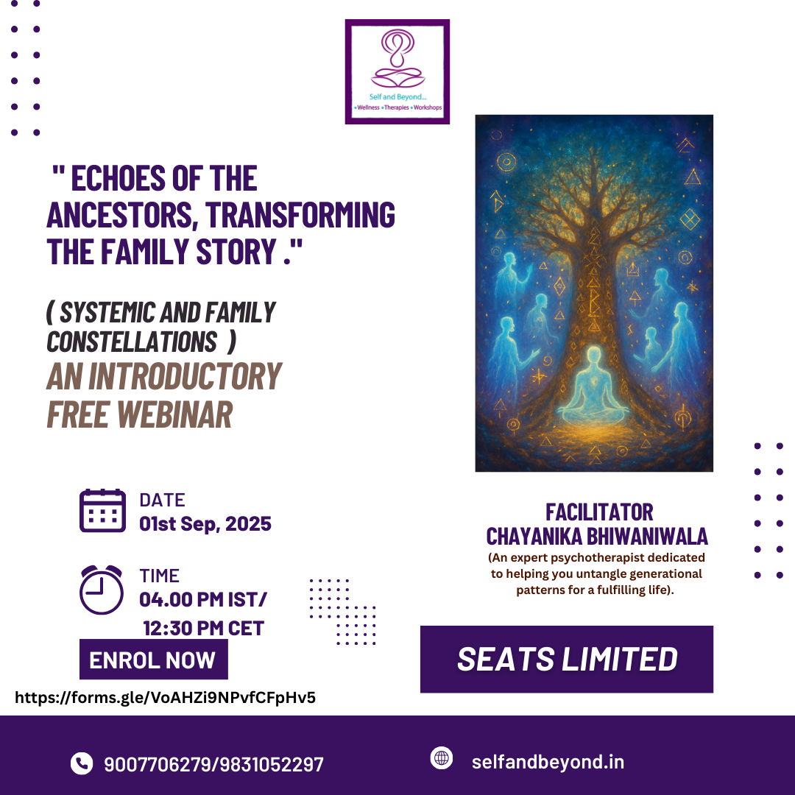

is the founder of Self and Beyond -A holistic
centre for integrated healing and therapies. She is a hypnotherapist(EKAA),
Past Life regression therapist(TASSO), NLP practitioner, Family Constellation
facilitator, Access Bars practitioner, Sound therapist, Tarot card reader,
member of IMDHA and Counsellor. She also conducts various self
empowering workshops and is a certified 'Heal Your Life' international
workshop leader by Hay House and Louise L. Hay.She is a graduate in
Economics Hons. from St.Xaviers college, Kolkata. After years of researching
in holistic healing and learning about various modalities, she wants to
promote health and wellness from a wide variety of perspectives. She aims
to spread the awareness of integrated and non drug healing that considers
the holistic and intergrated Modalities. The objective is to guide and motivate
individuals to feel better and to cultivate awareness of healthy lifestyle
choices and to EMPOWER them with tools and techniques to be co-
participant in their own health.
For registration :
Landline : 033-24220003Mobile : 9007706279
Email: selfandbeyondkolkata@gmail.com